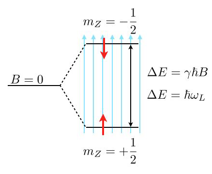

This page was generated from notebooks/L1/2_Intro_to_Stat_Phys_OH.ipynb.


Whirlwind recap of (equilibrium) statistical physics#
Why do we need statistical physics?
A typical property of soft matter systems is the importance of thermal fluctuations for structure and dynamics. “Soft” means often that the relevant energy scales are in order or smaller than \(k_B T\).
Rather than adopting well defined internal energy minima, the equilibrium states comprise a multitude of microstates, where fluctuations cause deviations from the internal energy minima.
The description of this thermal equilibrium is the focus of equilibrium statistical physics, which we review in the first 2-3 lectures
Note that living systems consume energy to drive irreversible processes and stay away from thermal equilibrium. Nevertheless, they often show seemingly random fluctuations that can even dominate their behavior. It is active topic research how to extend statistical physics to describe such active systems far from equilibrium.
Closed systems – microcanonical ensemble#
Basic principle of statistical mechanics: In an isolated system, all allowed microstates are equally likely.
An “isolated” system does not transfer energy, matter, volume or other conserved quantities outside its boundaries. A “closed” system can exchange energy, but not matter. “Open” systems typically exchange energy, matter and volume. Example: Biological systems (cells, organisms).
In classical physics (=all we care about in this course), a “microstate” is a specific microscopic configuration of all particles of the system.
All “allowed” microstates have the same energy, volume and number (and type) of particles.

Let’s define \(\Omega(E,V,N)\) to be the total number of microstates {\(\nu\)} with \(E_\nu=E\), \(V_\nu=V\) and \(N_\nu=N\).
Then, based on our “Basic Principle”, we can say that the probability of observing microstate \(\nu\) is given by \(P(\nu)=\Omega(E,V,N)^{-1}\).
N.B.: One could imagine measuring \(P(\nu)\) in two ways: 1. Follow a given system for a very long time and determine the fraction of the total time the system is in microstate \(\nu\). 2. Consider a very large ensemble of identical systems and determine the fraction of replicates that are in state \(\nu\). We will usually assume that both types of measurements give the same results in the thermodynamic limit (long times and large ensembles). This is called the ergodicity assumption. The breaking of ergodicity is topic of active research. Ergodicity is broken in certain models of glasses it is broken, reflecting the long relaxation times in these systems.
Energy exchange – canonical ensemble#
Most soft matter systems are closed but not isolated - they trade energy and volume with the environment (a.k.a. bath, sorroundings). What can we say about \(P(\nu_s)\) in those cases?
The combination of System (index s) and Bath (index b) forms an isolated system with fixed \(E\), \(V\), \(N\). We can therefore apply our “Basic Principle” to conclude
All states with \(E_s+E_b=E\) are equally likely.
To reach a high energy state, s has to “steal” energy from b. What’s the probability \(P(\nu_s)\) of system state \(\nu_s\) irrespective of the state of the bath?
\[P(\nu_s)=\sum_{\nu_b} P(\nu_s,\nu_b)=\frac{\Omega_b(E-E_s)}{\Omega(E,V,N)}\]\[\boxed{\rightarrow P(\nu_s)\propto \Omega_b(E-E_s)}\]
Note that the multiplicity of the bath alone controls the state of the system. I.e. the more states are available to the bath the more likely a given microstate of the system is. Energy exchange is important only in sofar as it modifies the number of states available to the bath and the system.
The multiplicity of microstates grows exponentially with its parameters. This can be most easily demonstrated for particle numbers (see example below) but generally holds also for energy and volume. Therefore, it makes sense to introduce the logarithm of the multiplicity. That’s what Ludwig Boltzmann did by introducing what’s now called the Boltzmann entropy:
Using the Boltzmann entropy, we can write
When the bath is very big (thermodynamic limit), we can Taylor expand the exponent,
Inserting above yields
The factor \(e^{-b E_s}\) is the Boltzmann factor, if we identify \(b\) and \(\beta_b\equiv (k_\mathrm{B} T_b)^{-1}\).
Thus,
Equivalently,
is the thermodynamic definition of the temperature of the bath.
Implication: The ratio of probabilities of two microstates is given by the ratio of their Boltzmann factors
Example: Barometric height formula.
Consider a constant gravitational force \(F=-mg\) along the \(z\)-direction such that the potential energy is given by \(E=mgz+E_0\) where \(E_0\) is the energy at ground level. For simplicity, we set \(E_0=0\).
The potential energy difference due to a height difference \(\Delta z\) is given by \(\Delta E = m g \Delta z\). Therefore, the ratio of the probabilities to find a particle at a given position compared to a position elevated by a height \(\Delta z\) is given by
Thus, increasing your elevation by 8 km approximately leads to an e-fold reduction of the air density. (“approximately”, because (i) the temperature changes with height, (ii) molecules interact and (ii) the atmosphere is not in equilibrium).
So far, we just cared about ratios of probabilities. In general it is much harder to compute absolute probabilities, which requires computing a normalization constant – the partition function. In the present one-dimensional case, however, we can do it easily: The probability \(p(z)\) for finding the particle at position \(z\) is given by \(p(z)=\frac{1}{\lambda}\exp\left( -\frac{z}{\lambda}\right)\), which is properly normalized, \(\int_0^\infty p(z)=1\).
Example: Two-level-system
As another frequent application of Boltzmann’s law are state populations of two state systems, as we find them frequently in physics, e.g., for spin systems. Such two level spin systems are, for example, very important for nuclear magnetic resonance (NMR), which is an important tool to study the structure and dynamics of soft matter.
Consider the image above, where a single energy level at zero magnetic field (\(B=0\)) splits into two energy levels due to the interaction of a proton spin (red arrow) with the external magnetic field.
The magnetic moment of the proton spin may take two expectation values in the magnetic field, which are characterized by the magnetic quantum number \(m_Z=\pm 1/2\). The magnetic moment projected along the magnetic field direction is then
and the energy of the states
with \(\gamma=2.675222005\times 10^{8}\; \mathrm{s}^{-1} \mathrm{T}^{-1}\) being the gyromagnetic ratio of the proton. The energy difference for a nonzero magnetic field is therefore given by
which results for a magnetic field of \(B=1\; \mathrm{T}\) in \(\Delta E\approx 1.76\times 10^{-7}\;{\rm eV}\) or a Larmor frequency of \(\omega_\mathrm{L}=42\; {\rm MHz}\). This energy difference is almost negligible as compared to the thermal energy at room temperature \(k_\mathrm{B}T=2.6\times 10^{-2}\;{\rm eV}\). Yet, this small energy difference is used to give the contrast in NMR and related techniques such as MRI.
Using the Boltzmann distribution we can now calculate the ratio of the population of spins in the lower or excited state
which is very close to one:
If you consider now a volume of \(V=1\;{\rm {\mu m}}^3\) water, then you would roughly have about \(N=6.7\times 10^{19}\) protons. This then means that the excess number of protons in the excited state is just \(N_{+\frac{1}{2}}-N_{-\frac{1}{2}}=4.5\times 10^{12}\), which is extremely low. Thus, to detect something in NMR or MRI, a certain number of protons in the volume is required.